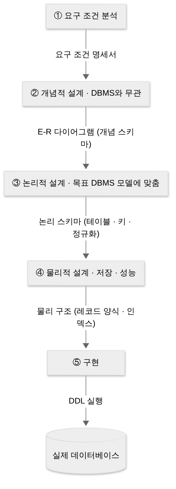

D046 · 여행사 ‘길벗투어’의 투어표 — 같은 데이터를 세 겹으로 보는 법과 DB 설계 5단계
B3 어제까지 관계 데이터 모델의 연산(관계대수 · 관계해석)을 봤다면, 오늘은 한 걸음 물러나 “데이터 모델이란 무엇이고, 데이터베이스는 어떤 겹으로 나뉘며, 어떤 순서로 설계하나”라는 큰 그림이에요. 스키마 · 독립성 문제는 최근 20회 중 17회, 설계 단계 · E-R 묶음은 20회 모두 나왔어요. 오늘은 가벼운 날이라 개념 여덟 개를 한 사례로 차분히 꿰는 데 집중해요. 예시는 여행사 ‘길벗투어’의 예약 시스템이에요.
- 데이터 모델의 표시 요소(구조 · 연산 · 제약조건)를 구별하고, 모델 종류가 ‘관계를 표현하는 방식’으로 나뉜다는 점을 설명할 수 있다
- 외부 · 개념 · 내부 스키마를 ‘누구의 관점인가’로 구별하고, 가짜 스키마 이름을 걸러낼 수 있다
- 논리적 · 물리적 데이터 독립성을 ‘어느 층이 바뀌고 어느 사상을 고치나’로 구별할 수 있다
- DBMS 필수 기능(정의 · 조작 · 제어)과 데이터베이스 특성 네 가지를 예로 들어 설명할 수 있다
- 설계 5단계의 순서와 산출물을 말하고, 트랜잭션 모델링 · 뷰 통합(개념)과 트랜잭션 인터페이스 설계(논리) 같은 작업을 맞는 단계에 배치할 수 있다
정처기 D043:으로 답장해 주세요. 릴레이션 · 키 · 뷰라는 말을 오늘 그대로 써요. D044는 11/21, D045는 11/22에 이어서 안내할게요.1부 (약 21분)
2부 (약 29분)
0. 같은 투어표, 세 사람의 눈
길벗투어가 엑셀 대신 예약 시스템을 들이기로 했어요. 회의실에 세 사람이 모였는데, 같은 ‘투어 목록’을 두고 하는 말이 다 달라요. 영업팀은 “이름이랑 지역만 보이면 돼요, 가격은 할인 협상 때문에 영업 화면에 띄우면 곤란해요.” 경영진은 “나는 가격이랑 예약 인원이 봐야 매출이 보이지.” DBA는 “예약이 매년 늘어날 텐데 디스크에 어떻게 쌓을지가 문제예요.” 한 사람이 전부 보면 비밀이 새고, 아무도 전체를 모르면 장사가 안 돼요. 그래서 데이터베이스는 같은 데이터를 세 겹으로 나눠 보게 하고, 그 세 겹을 잇는 다리를 따로 둬요.
오늘 쓰는 표는 둘이에요. 투어(투어번호, 이름, 지역, 가격) 4행, 예약(예약번호, 투어, 고객, 인원) 6행, 그리고 가격을 뺀 영업뷰(투어번호, 이름, 지역). 별점을 받는 후기 표는 장면 4에서 써요. 용어는 D043과 같아요 — 표 = 릴레이션, 행 = 튜플, 열 = 속성, 뷰 = 기본 테이블에서 유도한 가상 테이블.
1. 장면 1 — 데이터 모델이란
데이터 모델의 정의와 세 단계
정의: 데이터 모델은 현실 세계의 정보를 사람과 컴퓨터가 함께 이해할 수 있도록 단순화(추상화)해 표현한 개념적 도구예요. 현실의 투어 상품에는 가이드의 말투, 버스 냄새, 날씨까지 온갖 정보가 붙어 있지만, 예약 시스템은 “투어번호 · 이름 · 지역 · 가격”처럼 업무에 필요한 것만 골라 정해진 모양으로 담아야 해요. 그 ‘고르고 모양 잡는 틀’이 데이터 모델이에요. 왜 필요할까요? 모양을 미리 정하지 않으면 사람마다 엑셀 칸을 다르게 만들고, 프로그램은 어느 칸에 무엇이 있는지 알 수 없기 때문이에요.
추상화 수준에 따라 세 가지로 불러요. 개념적 데이터 모델은 사람이 이해하기 위한 그림으로, DBMS와 상관없이 “투어가 있고 고객이 그 투어를 예약한다”를 개체와 관계로 그려요(대표가 E-R 모델, 11/21 D047). 논리적 데이터 모델은 그 그림을 특정 DBMS가 받아들이는 모양으로 바꾼 것으로, 관계형 · 계층형 · 네트워크형이 여기에 속해요. 물리적 데이터 모델은 실제 저장 장치에 어떻게 놓을지까지 정한 것이에요. 이 세 수준이 장면 5의 개념 · 논리 · 물리 설계와 그대로 짝을 이뤄요. 참고로 ‘데이터 모델’이라는 말은 “길벗투어의 데이터 모델”처럼 특정 업무를 추상화한 결과를 가리킬 때도, “관계형 데이터 모델”처럼 모델링 방식 자체를 가리킬 때도 써요. 시험은 주로 뒤의 뜻이에요.
표시 요소 — 구조 · 연산 · 제약조건 기출 8회
구조(Structure)는 데이터베이스에 무엇이 있고 서로 어떻게 이어져 있는지, 즉 개체 타입과 개체 간 관계예요. “투어라는 개체가 있고, 투어 하나에 예약이 여럿 붙는다(1 : N)”가 구조예요. 시간이 지나도 잘 바뀌지 않는 정적인 성질이라고 해요. 연산(Operation)은 저장된 실제 값을 처리하는 작업의 명세로, 데이터를 다루는 도구예요. “가격이 30만 원 미만인 투어를 찾아라”, “예약을 하나 추가해라” 같은 검색 · 삽입 · 삭제 · 갱신 규칙이 연산이에요. 제약조건(Constraint)은 저장될 수 있는 데이터에 대한 논리적 제한이에요. “가격은 0 이상”, “없는 투어로는 예약할 수 없다”가 제약조건이에요.
시험에서 ‘데이터 모델 구성 요소’ 또는 ‘표시 요소’라고 부르는 것이 이 셋이에요. 셋을 한 문장으로 묶으면 “무엇이 어떻게 이어져 있고(구조), 그걸 어떻게 다루며(연산), 무엇은 허용하지 않는가(제약)”예요. 데이터 모델에서 ‘출력 구조’를 구성 요소라고 하면 출제자가 웃어요. 모델은 데이터의 모양과 규칙을 정할 뿐, 화면에 어떻게 예쁘게 뿌릴지는 응용 프로그램의 몫이니까요. 한편 모델이 표현하는 대상을 물으면 답이 달라져요 — 개념 모델이 그리는 것은 개체 · 속성 · 관계예요. “표시 요소”냐 “다루는 대상”이냐를 문제 문장에서 먼저 확인하세요.
첫 상자는 연산이 실제로 값을 처리하는 모습이에요. 부산 미식 2일과 강릉 해돋이 1일, 2행이 나와요. 둘째 상자는 오류가 나요. 예약 표의 투어 열이 투어 표를 참조하도록(외래키) 정해 둔 제약조건이 “T9라는 투어는 없다”며 막은 거예요. 구조를 정하고, 연산으로 다루고, 제약으로 지키는 세 요소가 실행 상자 두 개에 다 들어 있어요.
데이터 모델의 종류 — 관계를 어떻게 표현하나
정의: 논리적 데이터 모델은 개체 사이의 관계를 무엇으로 표현하느냐로 나뉘어요. 계층형은 관계를 부모–자식 트리로 표현해서 자식은 부모를 하나만 가져요(1 : N). 네트워크형은 관계를 그래프로 표현해서 한 멤버가 여러 오너에 속할 수 있어요(오너–멤버 관계, N : M 표현 가능). CODASYL DBTG 모델이라는 이름으로도 나와요. 관계형은 관계를 선으로 잇지 않고 표(릴레이션)의 같은 키 값으로 표현해요. 예약 행의 투어 열에 ‘T1’이라고 적혀 있으면 그게 곧 연결이에요.
길벗투어로 보면 “예약은 투어에도 속하고 고객에도 속한다”를 계층형은 한쪽 부모에만 매달아야 하니 어색하고, 네트워크형은 두 오너에 다 매달 수 있지만 포인터 줄이 복잡해지고, 관계형은 예약 표에 투어번호와 고객 열을 하나씩 두면 끝나요. 오늘은 구분 기준까지만 잡고, 각 모델의 상세 특징(트리 구조의 제약, CODASYL 등)은 11/23 카드에서 봐요.
2. 장면 2 — 스키마 세 겹
스키마와 3단계 구조가 생긴 이유
정의: 스키마(Schema)는 데이터베이스의 구조와 제약조건을 정의한 명세, 즉 데이터베이스의 설계도예요. 1970년대 미국 표준 위원회(ANSI/SPARC)가 이 설계도를 외부 · 개념 · 내부의 세 단계로 나누자고 제안했어요. 이유는 두 가지예요. 첫째, 사용자마다 보고 싶은 범위가 달라서 각자에게 맞는 모양을 따로 주고 싶었어요. 둘째, 저장 방식은 기술이 바뀔 때마다 달라지는데 그때마다 사용자 프로그램을 고치고 싶지 않았어요. 그래서 “사람이 보는 겹”과 “디스크가 보는 겹” 사이에 “조직 전체가 합의한 겹”을 하나 끼워 넣은 거예요. 이 제안은 공식 표준으로 채택되지는 않았지만, 오늘날 DBMS의 기본 사고방식이 됐어요.
외부 · 개념 · 내부 스키마
외부 스키마(External Schema)는 사용자나 응용 프로그래머 한 명 한 명의 관점에서 본 데이터베이스의 논리 구조예요. 전체 중 필요한 부분만 보여 주기 때문에 서브 스키마 또는 사용자 뷰라고도 불러요. 영업팀의 영업뷰, 경영진의 경영뷰처럼 하나의 데이터베이스에 여러 개 있을 수 있어요. 같은 데이터를 여러 사용자가 서로 다른 모양으로 공유하는 비결이 여기에 있어요.
개념 스키마(Conceptual Schema)는 조직 전체의 관점에서 본 데이터베이스의 논리 구조예요. 모든 응용 프로그램과 사용자가 필요로 하는 데이터를 통합한 하나의 그림으로, 개체 간 관계, 제약조건, 접근 권한 · 보안 · 무결성 규칙까지 여기에 정의해요. 데이터베이스마다 하나만 있고, 보통 DBA가 작성해요. 그냥 ‘스키마’라고 하면 대개 이것을 가리켜요. 접근 권한 규칙은 개념 스키마가 갖고 있고, 그 규칙에 맞춰 외부 스키마가 사용자별로 잘라서 보여 준다고 이해하면 두 층의 역할이 겹치지 않아요.
내부 스키마(Internal Schema)는 물리적 저장 장치의 입장에서 본 데이터베이스 구조예요. 저장 레코드의 형식, 각 필드를 어떤 데이터 표현으로 저장하는지, 레코드가 디스크에 놓이는 물리적 순서, 인덱스와 접근 경로가 여기에 들어가요. 이것도 데이터베이스마다 하나예요. 실제 데이터베이스가 기억장치에 저장된 모습을 가리키기 때문에 ‘저장 스키마(storage schema)’라는 다른 이름으로도 불려요. 다만 실제 블록 주소나 트랙 번호처럼 운영체제 · 하드웨어 수준의 일까지 다루지는 않아요 — 그건 DBMS 아래층의 일이에요.
영업뷰는 4행 3열(번호 · 이름 · 지역)이고 가격 열은 아예 존재하지 않는 것처럼 보여요. 투어 표를 직접 보면 4열이에요. 같은 4개의 투어가 보는 사람에 따라 다른 모양으로 나온 거예요. 아래 애니메이션은 영업 담당자의 한 줄짜리 SELECT가 세 겹을 내려갔다 올라오는 과정이에요.
| 요청 | 누가 |
|---|---|
| SELECT * FROM 영업뷰; | 영업 담당자 |
영업 담당자는 “투어 목록 보여 줘”를 영업뷰에 요청해요. 이 사람은 영업뷰라는 외부 스키마 하나만 알아요. 투어 표가 몇 열인지, 디스크 어디에 있는지는 몰라요.
| 투어번호 | 이름 | 지역 | 가격 |
|---|---|---|---|
| T1 | 제주 올레 3일 | 제주 | (권한 밖) |
| T2 | 부산 미식 2일 | 부산 | (권한 밖) |
| T3 | 교토 단풍 4일 | 교토 | (권한 밖) |
| T4 | 강릉 해돋이 1일 | 강릉 | (권한 밖) |
① DBMS가 외부/개념 사상을 따라 내려가 개념 스키마에서 투어 표의 전체 구조를 확인해요. 가격 열도 있지만 영업뷰 정의에는 번호 · 이름 · 지역만 있으니 가격은 이 사람 몫이 아니에요.
| 저장 위치 | 읽는 방법 | 레코드 |
|---|---|---|
| 데이터 페이지 1 | 표 전체 훑기 | T1 · T2 |
| 데이터 페이지 2 | 표 전체 훑기 | T3 · T4 |
② 개념/내부 사상을 따라 내부 스키마로 내려가 저장 레코드를 실제로 읽어요. 어느 페이지에 어떤 형식으로 놓였는지는 DBMS와 DBA만 신경 쓰는 일이에요.
| 투어번호 | 이름 | 지역 |
|---|---|---|
| T1 | 제주 올레 3일 | 제주 |
| T2 | 부산 미식 2일 | 부산 |
| T3 | 교토 단풍 4일 | 교토 |
| T4 | 강릉 해돋이 1일 | 강릉 |
③ 읽은 레코드가 거꾸로 올라오면서 영업뷰의 모양(3열)으로 잘려 화면에 4행이 나와요. 한 줄의 SELECT가 세 겹을 왕복했지만 사용자는 맨 위 한 겹만 봤어요.
| 스키마 | 누구의 관점 | 몇 개 | 다른 이름 · 담는 것 |
|---|---|---|---|
| 외부 | 개별 사용자 · 응용 프로그래머 | 여러 개 | 서브 스키마, 사용자 뷰 |
| 개념 | 조직 전체(DBA) | 하나 | 전체 논리 구조, 관계 · 제약 · 권한 · 보안 · 무결성 |
| 내부 | 물리적 저장 장치 | 하나 | 저장 레코드 형식 · 필드 표현 · 물리 순서 · 인덱스 |
‘내용 스키마’는 시험장에만 사는 가상 인물이에요. ‘슈퍼 스키마’, ‘관계 스키마’도 같은 동네 주민이에요. 3단계 스키마의 이름은 외부 · 개념 · 내부 셋뿐이고, 나머지는 그럴듯하게 만든 오답이에요.
3. 장면 3 — 데이터 독립성
독립성의 정의와 사상
정의: 데이터 독립성(Data Independence)은 어떤 층의 스키마를 바꿔도 그 위층의 스키마와 응용 프로그램은 바꾸지 않아도 되는 성질이에요. 파일 시스템 시절에는 파일의 레코드 배치를 바꾸면 그 파일을 읽는 프로그램을 전부 다시 짜야 했어요. 저장 구조와 프로그램이 한 몸이었기 때문이에요. 3단계 스키마는 층 사이에 사상(Mapping)이라는 연결 규칙을 두어 이 문제를 풀어요. 외부 스키마와 개념 스키마를 잇는 외부/개념 사상(응용 인터페이스), 개념 스키마와 내부 스키마를 잇는 개념/내부 사상(저장 인터페이스)이에요. 아래층이 바뀌면 사상만 고치고 위층은 그대로 둬요.
독립성은 이사 가는 날 이삿짐센터(사상)만 부르고 위층 이웃(응용 프로그램)은 아무것도 모르게 하는 것과 같아요. 이웃이 모르게 하는 게 포인트예요. 이웃이 눈치채는 순간 그건 독립성이 아니라 민원이에요.
논리적 독립성 vs 물리적 독립성
논리적 데이터 독립성은 개념 스키마가 바뀌어도 외부 스키마와 응용 프로그램이 영향을 받지 않는 성질이에요. 투어 표에 ‘담당’ 열을 추가하거나 새 표를 만들어도, 외부/개념 사상만 고치면 영업뷰와 영업 프로그램은 그대로예요. 응용 프로그램을 개념 구조의 변화에서 떼어 놓는 거죠. 뷰가 바로 이 역할을 해요 — D043에서 본 “뷰는 논리적 독립성을 제공한다”는 문장이 이 뜻이에요.
물리적 데이터 독립성은 내부 스키마가 바뀌어도 개념 스키마(그리고 그 위 외부 스키마)가 영향을 받지 않는 성질이에요. 인덱스를 새로 만들거나, 저장 장치를 바꾸거나, 레코드 저장 방식을 바꿔도 개념/내부 사상만 고치면 테이블 구조와 SQL은 그대로예요. 성능 튜닝을 마음 놓고 할 수 있는 이유예요. 두 이름을 가르는 질문은 하나예요: “어느 층을 공사했나?” 논리 구조(개념 층)면 논리적, 물리 저장(내부 층)이면 물리적이에요.
| 층 | 변경 전 상태 |
|---|---|
| 외부(영업뷰) | 번호 · 이름 · 지역 |
| 개념(투어 표) | 번호 · 이름 · 지역 · 가격 |
| 내부(저장) | 페이지 2개, 인덱스 없음 |
변경 전이에요. 이제 두 가지 공사를 해 볼게요. 하나는 개념 스키마 공사, 하나는 내부 스키마 공사예요.
| 층 | 논리 공사 후 |
|---|---|
| 외부(영업뷰) | 번호 · 이름 · 지역 — 그대로 |
| 개념(투어 표) | + 담당 열 추가 |
| 내부(저장) | 새 열 저장 공간 |
① 개념 스키마에 ‘담당’ 열을 추가해요. 영업뷰는 원래 세 열만 고르도록 정의돼 있으니 영업 화면과 영업용 프로그램은 손댈 필요가 없어요. 이것이 논리적 데이터 독립성이에요.
| 층 | 물리 공사 후 |
|---|---|
| 외부(영업뷰) | 그대로 |
| 개념(투어 표) | 그대로 |
| 내부(저장) | + 지역 인덱스, 더 빠른 디스크로 이전 |
② 이번엔 지역 열에 인덱스를 만들고 저장 장치를 바꿔요. 개념 스키마의 표 구조는 그대로라 SQL 한 글자도 고치지 않아요. 빨라지기만 해요. 이것이 물리적 데이터 독립성이에요.
| 공사한 층 | 고친 사상 | 지켜진 층 | 이름 |
|---|---|---|---|
| 개념 | 외부/개념 사상 | 외부 | 논리적 독립성 |
| 내부 | 개념/내부 사상 | 개념(→ 외부도) | 물리적 독립성 |
③ 정리하면 바뀐 층 바로 위의 사상만 고치고 그 위층은 지켜요. 이름은 “어느 층이 바뀌었나”로 붙어요 — 논리(개념) 층 공사면 논리적, 물리(내부) 층 공사면 물리적.
첫 상자에서 투어 표는 5열이 됐지만 영업뷰는 여전히 4행 3열이에요(논리적 독립성). 둘째 상자는 인덱스를 만든 뒤에도 같은 SQL로 ‘제주 올레 3일’ 1행이 나와요(물리적 독립성). 셋째 상자는 오류가 나요. 외부 스키마는 정의된 범위만 보여 주기 때문에, 영업 담당자에게 가격 열은 존재하지 않아요. 독립성과 보안이 같은 장치에서 나온다는 게 3단계 구조의 묘미예요.
4. 장면 4 — DBMS 필수 기능과 데이터베이스의 특성
DBMS가 필요한 이유와 필수 기능 세 가지
정의: DBMS(Database Management System)는 사용자와 데이터베이스 사이에서 데이터를 정의 · 저장 · 검색 · 갱신하고, 여러 사용자가 동시에 안전하게 쓰도록 관리하는 소프트웨어예요. 영업팀 엑셀, 경영팀 엑셀, 정산팀 엑셀을 따로 쓰면 같은 투어 가격이 세 군데 적혀 서로 달라지고(중복 · 불일치), 두 직원이 같은 마지막 좌석을 동시에 팔아 버려요. DBMS는 데이터를 한곳에 모아 이 문제를 막는 관리자예요. 그 관리자가 반드시 갖춰야 할 기능, 곧 DBMS 필수 기능을 세 가지로 정리해요.
정의 기능(Definition)은 데이터의 형태(타입) · 구조 · 이용 방식 · 제약조건을 명시하고, 응용 프로그램과 데이터베이스가 서로 맞는 인터페이스를 갖도록 정하는 기능이에요. 투어 표를 만들고 “가격은 0 이상”이라고 적는 일이에요. SQL로는 DDL(CREATE · ALTER · DROP)이 맡아요. 조작 기능(Manipulation)은 사용자가 데이터를 검색 · 삽입 · 삭제 · 갱신하도록 요청하는 수단을 제공하는 기능이에요. 예약을 넣고, 찾고, 고치는 일이고 DML(SELECT · INSERT · UPDATE · DELETE)이 맡아요. 제어 기능(Control)은 데이터의 정확성과 안전성을 지키는 기능이에요. 무결성이 깨지지 않게 막고, 권한이 있는 사람만 접근하게 하고(보안), 여러 사용자가 동시에 갱신해도 결과가 맞게 병행 제어를 해요. DCL(GRANT · REVOKE)과 트랜잭션 제어(COMMIT · ROLLBACK)가 맡아요. 정의는 건축 설계도 그리기, 조작은 입주 · 퇴거 처리, 제어는 경비실이라고 생각하면 셋이 섞이지 않아요.
| 기능 | 하는 일 | 길벗투어 예 | SQL 대응 |
|---|---|---|---|
| 정의 | 타입 · 구조 · 제약 · 이용 방식 명시 | 투어 · 문의 표 만들기, 가격 ≥ 0 | DDL |
| 조작 | 검색 · 삽입 · 삭제 · 갱신 요청 수단 | 후기 넣기, 지역별 투어 찾기 | DML |
| 제어 | 무결성 · 보안(권한) · 병행 제어 | 별점 9 막기, 영업팀에 가격 권한 없음 | DCL · TCL |
첫 상자는 결과 표 없이 성공해요 — 구조와 제약을 정한 정의 기능이에요. 둘째 상자는 (1, T1, 5) 1행이 나와요 — 넣고 찾은 조작 기능이에요. 셋째 상자는 오류가 나요. 후기 표를 만들 때 정의해 둔 “별점은 1~5” 규칙을 DBMS가 집행해 무결성을 지킨 거예요. 규칙을 적는 것은 정의, 그 규칙을 지키게 하는 것은 제어라는 점이 미묘하지만 시험에서 가르는 지점이에요.
데이터베이스의 정의와 특성 네 가지
정의: 데이터베이스는 한 조직의 여러 응용 시스템이 공동으로 쓰기 위해 통합(중복을 최소화해 모은)하고, 컴퓨터가 접근할 수 있는 매체에 저장한, 조직의 업무에 꼭 필요한 운영 데이터이자 여러 사용자가 함께 쓰는 공용 데이터예요. 이 정의에서 나오는 성질이 데이터베이스 특성 네 가지예요.
실시간 접근성(Real-time Accessibility)은 질의가 들어오면 바로 응답한다는 뜻이에요. 고객이 “제주 투어 자리 남았어요?”라고 물으면 다음 날 일괄 처리로 답하지 않아요. 계속적 변화(Continuous Evolution)는 삽입 · 삭제 · 갱신으로 데이터가 늘 바뀌면서 최신 상태를 유지한다는 뜻이에요. 오늘도 예약이 들어오고 취소돼요. 동시 공용(Concurrent Sharing)은 여러 사용자가 같은 데이터를 동시에 이용할 수 있다는 뜻이에요. 영업팀과 정산팀이 같은 예약 표를 동시에 봐요. 내용에 의한 참조(Content Reference)는 데이터를 저장된 위치나 주소가 아니라 값(내용)으로 찾는다는 뜻이에요. “디스크 3번 블록”이 아니라 “지역 = 교토”로 찾죠. 장면 3의 실행 상자들이 모두 내용 참조였어요.
5. 장면 5 — 데이터베이스 설계 다섯 단계 기출 13회
왜 단계로 나누나
정의: 데이터베이스 설계는 사용자의 요구를 받아 그것을 담을 데이터베이스 구조를 만들어 가는 과정이에요. 한 번에 CREATE TABLE부터 치면 빠를 것 같지만, 요구가 하나만 바뀌어도 테이블 · 인덱스 · 프로그램을 통째로 다시 짜야 해요. 집을 짓고 나서 설계도를 다시 그리는 셈이죠. 그래서 추상적인 것에서 구체적인 것으로, “무엇이 필요한가 → 어떤 개체와 관계가 있나 → 어떤 테이블인가 → 디스크에 어떻게 놓나 → 실제로 만들기” 순서로 내려가요. 각 단계의 결과물이 다음 단계의 재료라, 앞 단계가 탄탄하면 뒤 단계에서 바꿀 일이 줄어요. 장면 1의 개념 · 논리 · 물리 데이터 모델이 이 순서와 그대로 겹쳐요. 시험에서는 이 순서를 ‘DB 설계 단계’라고 부르고, 순서와 단계별 작업을 함께 물어요.
다섯 단계의 정의와 하는 일
요구 조건 분석은 사용자가 무엇을 저장하고 어떻게 쓰고 싶은지 수집 · 분석해 요구 조건 명세서를 만드는 단계예요. 데이터베이스의 범위를 정하고, 부서 사이 요구가 서로 부딪히는 곳을 조율하고, 외부 시스템과 주고받는 것을 파악해요. 개념적 설계는 명세서를 바탕으로 현실 세계를 추상화해 개념 스키마를 만드는 단계예요. 특정 DBMS와 무관하게 개체 · 속성 · 관계를 E-R 다이어그램으로 그리고, 트랜잭션 모델링과 뷰 통합을 해요(장면 6). 논리적 설계는 개념 스키마를 목표 DBMS가 지원하는 데이터 모델(관계형이면 테이블 · 키)에 맞는 논리 스키마로 바꾸는 단계예요. 이 단계에서 정규화를 하고, 트랜잭션 인터페이스를 설계하고, 만든 스키마를 평가 · 정제해요. 그래서 논리적 설계를 ‘데이터 모델링’이라고도 부르고, 개념적 설계는 ‘정보 모델링’이라 불러요. 둘 다 물리적 설계보다 앞 단계라는 점도 같이 기억하세요.
물리적 설계는 논리 스키마를 특정 DBMS 위에서 실제로 저장할 물리 구조로 바꾸는 단계예요. 저장 레코드의 양식, 레코드 집중(자주 같이 읽는 레코드를 가까이 두기) 분석, 인덱스 같은 접근 경로, 필요하면 반정규화와 파티션을 정해요. 판단 기준은 응답 시간 · 저장 공간 효율 · 트랜잭션 처리량이에요. 구현은 설계한 구조를 목표 DBMS의 DDL로 실제로 만들고, 트랜잭션(응용 프로그램)을 작성하는 단계예요.

| 단계 | 결과물 |
|---|---|
| ① 요구 조건 분석 | “영업은 지역별 목록, 경영은 매출, 정산은 인원별 금액이 필요” |
① 요구 조건 분석: 영업 · 경영 · 정산 부서를 인터뷰해 무엇을 저장하고 어떤 업무 처리가 필요한지 적어요. 결과물은 요구 조건 명세서예요.
| 단계 | 결과물 |
|---|---|
| ① 요구 조건 분석 | 요구 조건 명세서 |
| ② 개념적 설계 | 투어 □ —◇ 예약한다 ◇— □ 고객 (E-R 다이어그램) |
② 개념적 설계: 명세서를 읽고 투어 · 예약 · 고객과 그 관계를 E-R 다이어그램으로 그려요. 어떤 DBMS를 쓸지는 아직 정하지 않아요.
| 단계 | 결과물 |
|---|---|
| ② 개념적 설계 | E-R 다이어그램 |
| ③ 논리적 설계 | 투어(투어번호 PK, …) · 예약(예약번호 PK, 투어 FK, …) |
③ 논리적 설계: 관계형 DBMS를 쓰기로 정했으니 E-R을 테이블 · 기본키 · 외래키로 옮기고 정규화로 다듬어요. 결과물은 논리 스키마예요.
| 단계 | 결과물 |
|---|---|
| ③ 논리적 설계 | 논리 스키마 |
| ④ 물리적 설계 | 지역 인덱스 · 레코드 저장 양식 · 예약 파티션 검토 |
④ 물리적 설계: 지역 검색이 많으니 지역 열에 인덱스, 예약 표는 해마다 커지니 저장 방식을 정해요. 응답 시간 · 저장 공간 · 처리량을 따지는 단계예요.
| 단계 | 결과물 |
|---|---|
| ④ 물리적 설계 | 물리 구조 |
| ⑤ 구현 | CREATE TABLE 투어 … ; CREATE INDEX … ; |
⑤ 구현: 정한 구조를 목표 DBMS의 DDL로 실제로 실행하고, 예약 화면 같은 응용 프로그램을 붙여요. 이 페이지의 실행 상자가 바로 이 단계의 결과물이에요.
| 단계 | DBMS와의 관계 | 대표 작업 | 결과물 |
|---|---|---|---|
| 요구 조건 분석 | — | 요구 수집 · 범위 · 상충 해결 | 요구 조건 명세서 |
| 개념적 설계 | 무관(독립) | E-R 작성 · 트랜잭션 모델링 · 뷰 통합 | E-R 다이어그램(개념 스키마) |
| 논리적 설계 | 데이터 모델(관계형 등)에 맞춤 | 테이블 · 키 매핑 · 정규화 · 트랜잭션 인터페이스 설계 · 스키마 평가 | 논리 스키마 |
| 물리적 설계 | 특정 DBMS 특성 · 성능 | 저장 레코드 양식 · 레코드 집중 · 접근 경로(인덱스) · 반정규화 | 물리 구조 |
| 구현 | 목표 DBMS | DDL 실행 · 트랜잭션 작성 | 실제 데이터베이스 |
6. 장면 6 — 개념적 설계 깊이 보기
개념적 설계의 정의와 하는 일
정의: 개념적 설계(정보 모델링)는 요구 조건 명세서를 읽고 현실 세계를 개념 데이터 모델로 추상화해 DBMS에 독립적인 개념 스키마를 만드는 단계예요. 대표 결과물은 E-R 다이어그램이고, 논리적 설계의 바로 앞 단계예요. “관계형 DBMS를 쓸지, 어느 제품을 쓸지”는 아직 정하지 않아요. 그래서 이 단계의 그림은 나중에 DBMS를 바꿔도 그대로 쓸 수 있어요.
이 단계에서 하는 일은 셋이에요. 트랜잭션 모델링은 업무 처리 단위(예약하기, 취소하기, 월말 정산하기)가 어떤 데이터를 읽고 쓰는지 파악하는 일이에요. “누가 어떤 서류를 건드리나”라는 업무 동선 조사죠. 뷰 통합은 부서마다 따로 정리한 요구 뷰(영업이 보는 투어, 경영이 보는 투어, 정산이 보는 예약)를 하나의 개념 스키마로 합치는 일이에요. 합치다 보면 같은 것을 다른 이름으로 부른 곳(정산팀의 ‘투어명’과 영업팀의 ‘이름’), 같은 이름인데 뜻이 다른 곳, 여러 뷰에 겹친 속성이 드러나요. 영업팀 · 경영팀 · 정산팀이 각자 그린 지도를 한 장에 포개면 ‘같은 도시 다른 이름’이 보이는 것과 같아요. 속성(Attribute) 합성은 이렇게 여러 뷰에 흩어진 속성을 정리해 한 개체의 속성으로 합치는 일이에요.
트랜잭션 모델링(개념) vs 트랜잭션 인터페이스 설계(논리)
두 이름이 비슷해 시험이 가장 즐겨 바꿔치기하는 짝이에요. 트랜잭션 모델링은 “예약하기는 투어와 고객을 읽고 예약을 쓴다”처럼 업무가 다루는 데이터를 개념 수준에서 파악하는 일이라 개념적 설계예요. 트랜잭션 인터페이스 설계는 그 업무를 실제 DBMS의 테이블 구조 위에서 어떤 입력 · 출력 형식으로 호출할지 정하는 일이라, 테이블이 정해진 다음인 논리적 설계예요. 앞은 업무 동선 파악, 뒤는 창구 화면 내기예요. 출제자는 이 둘을 뒤바꿔 놓고 “틀린 것”을 묻는답니다.
7. 가르는 질문 표와 오늘의 지도
오늘 개념은 모두 ‘짝’으로 나와요. 아래 표는 헷갈리는 짝마다 한 질문으로 가르는 방법이고, 그 아래 표는 작업 열두 개를 다섯 단계에 배치한 것이에요. 문제를 풀 때 선지의 작업 이름을 이 배치표에 대 보면 연결이 잘못된 곳이 바로 보여요.
| 헷갈리는 짝 | 가르는 질문 | 예 → / 아니오 → |
|---|---|---|
| 구조 vs 연산 | 저장된 값을 처리하는 작업인가? | 연산 / 구조(개체 타입과 관계) |
| 외부 vs 개념 스키마 | 조직 전체에 하나뿐인가? | 개념 / 외부(사용자마다 여럿) |
| 개념 vs 내부 스키마 | 저장 장치의 입장인가? | 내부 / 개념 |
| 논리적 vs 물리적 독립성 | 공사한 층이 저장 구조(인덱스 · 장치)인가? | 물리적 / 논리적 |
| 정의 vs 제어 기능 | 규칙을 적는가, 지키게 하는가? | 적기 = 정의 / 지키기 = 제어 |
| 개념 vs 논리 설계 | 특정 DBMS 데이터 모델을 정한 뒤인가? | 논리 / 개념 |
| 논리 vs 물리 설계 | 응답 시간 · 저장 공간을 따지나? | 물리 / 논리 |
| 트랜잭션 모델링 vs 인터페이스 설계 | 테이블이 정해진 뒤의 일인가? | 인터페이스(논리) / 모델링(개념) |
| 작업 | 요구 | 개념 | 논리 | 물리 | 구현 |
|---|---|---|---|---|---|
| 요구 수집 · 범위 · 상충 해결 | ✓ | ||||
| E-R 다이어그램 작성 | ✓ | ||||
| 트랜잭션 모델링 | ✓ | ||||
| 뷰 통합 · 속성 합성 | ✓ | ||||
| DBMS에 맞는 논리 스키마 · 매핑 | ✓ | ||||
| 정규화 | ✓ | ||||
| 트랜잭션 인터페이스 설계 | ✓ | ||||
| 스키마 평가 · 정제 | ✓ | ||||
| 저장 레코드 양식 | ✓ | ||||
| 레코드 집중 분석 · 접근 경로(인덱스) | ✓ | ||||
| 반정규화 | ✓ | ||||
| DDL 실행 · 트랜잭션 작성 | ✓ |
| 장면 | 하는 일 | 시험 개념 | 결과물 |
|---|---|---|---|
| 1 | 현실을 틀에 담기 | 데이터 모델 · 구조 · 연산 · 제약 · 모델 종류 | 투어 · 예약 모델 |
| 2 | 보는 눈 나누기 | 외부 · 개념 · 내부 스키마 | 영업뷰 · 투어 표 · 저장 구조 |
| 3 | 공사해도 안 깨지게 | 논리적 · 물리적 독립성, 사상, 뷰 | 열 추가 · 인덱스 추가 후에도 그대로인 영업뷰 |
| 4 | 관리자 세우기 | DBMS 정의 · 조작 · 제어, DB 특성 4 | 문의 · 후기 표와 막힌 별점 9 |
| 5 | 만드는 순서 | 설계 5단계와 산출물 | 명세서 → E-R → 논리 스키마 → 물리 구조 → DDL |
| 6 | 설계 첫 그림 다듬기 | 개념적 설계 · 트랜잭션 모델링 · 뷰 통합 | 통합된 개념 스키마 |
8. 오답 복습 — 다섯 가지 다시 보기
오늘 범위와는 다른 1과목 내용이에요. 앞의 셋은 일주일 전에 맞힌 것(D+7), 뒤의 둘은 3주 전에 정리한 것(D+21)이에요. 길벗투어 개발팀이 예약 시스템을 만들며 사내 위키에 남긴 메모라고 생각하고 읽어 주세요.
HIPO는 위에서 아래로 나눈다 (M02-7)
정의: HIPO(Hierarchy Input Process Output)는 시스템의 기능을 계층 구조로 나누고 각 기능을 입력 · 처리 · 출력 관점으로 기술하는 도구예요. 큰 기능에서 작은 기능으로 쪼개 내려가는 하향식 개발 방식에 맞고, 문서화와 유지보수에 유리해요. 구성은 전체 기능의 계층을 보여 주는 가시적 도표(도식 목차), 주요 기능의 입력 · 처리 · 출력을 보여 주는 총체적 도표, 기능 하나를 자세히 적는 세부적 도표예요.
개발팀 위키의 첫 장은 “예약 시스템” 한 상자, 그 아래 “예약 · 결제 · 정산”, 그 아래 “좌석 확인 · 예약 저장 …”으로 내려가요. 작은 기능부터 모아 올라가는 그림이 아니라 큰 상자부터 쪼개 내려가는 그림이라는 점을 기억하세요.
부품이 모여 하나가 되면 집단화 (M02-10)
정의: 데이터 추상화 기법 중 집단화(Aggregation)는 여러 구성 요소를 모아 하나의 상위 개념으로 묶는 것으로, “부분은 전체의 일부(is-part-of)” 관계예요. 분류화(Classification)는 공통 성질을 가진 개별 대상들을 하나의 이름(클래스)으로 묶는 것, 일반화(Generalization)는 비슷한 개념들의 공통점을 뽑아 상위 개념을 만드는 것(is-a), 특수화는 그 반대 방향이에요.
위키에 “투어 일정 = 출발일 + 숙소 + 교통편”이라고 적었다면 부품을 모아 하나를 만든 집단화예요. “제주 올레 3일, 교토 단풍 4일 … 이것들은 모두 ‘투어’다”는 같은 종류를 한 이름으로 묶은 분류화예요. 가르는 질문은 “부품들의 모임인가, 같은 종류의 무리인가?”예요.
McCabe 순환 복잡도는 간선 − 노드 + 2 (M02-20)
정의: McCabe 순환 복잡도는 제어 흐름 그래프에서 서로 독립적인 실행 경로의 수를 나타내는 지표로, V(G) = E − N + 2(E는 간선 수, N은 노드 수)예요. 그래프가 나눈 영역의 수, 또는 조건 분기 수 + 1로도 같은 값을 얻어요. 이 값만큼 기본 경로 테스트 케이스가 필요해요.
예약 저장 함수의 흐름도가 노드 7개, 간선 9개라면 9 − 7 + 2 = 4예요. 공식을 E − N + 1이나 N − E + 2로 기억하면 1 차이로 틀린 답에 정확히 걸려요. 출제자는 그 1 차이 선지를 꼭 넣어 둬요.
표준을 만들고 맞춰 쓰면 정의 단계 (D023-8)
정의: CMMI는 조직의 소프트웨어 프로세스 성숙도를 다섯 단계로 평가해요. 초기(Initial)는 프로세스가 없거나 개인 역량에 의존, 관리(Managed)는 프로젝트 단위로 계획 · 추적하는 수준, 정의(Defined)는 조직 차원의 표준 프로세스를 정의하고 프로젝트마다 그것을 맞춤(테일러링) 적용하는 수준, 정량적 관리(Quantitatively Managed)는 프로세스를 정량 데이터로 측정 · 통제하는 수준, 최적화(Optimizing)는 지속적으로 개선하는 수준이에요.
길벗투어 개발팀이 “우리 회사 개발 표준 절차서”를 만들어 두고 예약 시스템 · 정산 시스템 프로젝트가 각자 상황에 맞게 다듬어 쓴다면 정의 단계예요. 프로젝트마다 알아서 계획만 세우는 건 관리, 결함률 숫자로 절차를 통제하면 정량적 관리예요.
로컬에 전체 이력을 두면 분산 저장소 (D023-10)
정의: 버전 관리 방식 중 분산 저장소 방식은 개발자마다 원격 저장소의 전체 이력을 복제한 로컬 저장소를 갖고, 로컬에서 먼저 커밋한 뒤 원격 저장소에 반영(push)하는 방식이에요(Git 등). 클라이언트/서버 방식은 이력이 중앙 서버 한 곳에만 있고 개발자는 작업 파일만 받아 서버에 바로 커밋하는 방식이에요(SVN 등). 공유 폴더 방식은 공유 폴더에 파일을 복사하는 원시적인 방식이에요.
개발팀이 제주 출장지의 와이파이 없는 숙소에서도 커밋을 쌓아 두었다가 돌아와서 한 번에 올렸다면, 로컬에 이력이 통째로 있는 분산 저장소 덕분이에요. 중앙 서버 방식이었다면 서버에 못 붙는 동안 커밋 자체를 못 해요.
| 문제 | 가르는 질문 | 기억할 것 |
|---|---|---|
| HIPO | 큰 기능부터 쪼개 내려가나? | 하향식 · 가시적 · 총체적 · 세부적 도표 |
| 추상화 | 부품의 모임인가, 같은 종류의 무리인가? | 부품 = 집단화, 무리 = 분류화 |
| McCabe | 간선과 노드 중 무엇을 먼저 쓰나? | E − N + 2 |
| CMMI | 조직 표준을 맞춰 쓰나? | 정의(Defined) — 숫자로 통제면 정량적 관리 |
| 버전 관리 | 로컬에 전체 이력이 있나? | 분산 저장소 — 중앙에만 있으면 클라이언트/서버 |
참고: ANSI-SPARC Architecture · Data independence · Data model · Database design · Database management system 위키 문서, 수제비 2027 기본서의 해당 범위를 대조해 내 말로 정리했어요. 실행 상자 결과는 브라우저 안 PostgreSQL(PGlite) 기준이에요.
확인 문제
1~2번은 오늘 범위, 3~7번은 오답 재확인이에요.
- 여행 앱 회사의 DBA가 3단계 스키마와 데이터 독립성을 설명했다. 다음 중 옳은 것은?
- 공연 예매 서비스의 데이터베이스를 설계하고 있다. 다음 중 개념적 설계 단계에서 하는 작업이 아닌 것은?
- ‘연락처’를 우편번호 · 도로명 · 상세 주소라는 구성 요소들이 모여 이루어진 하나의 개념으로 표현했다. 이처럼 부분들을 모아 전체를 나타내는(is-part-of) 추상화 기법은?
- 설계 문서화 도구인 HIPO를 두고 팀원들이 한 말 중 틀린 것은?
- 어떤 모듈의 제어 흐름 그래프가 노드 9개, 간선 13개로 이루어져 있다. McCabe 순환 복잡도는?
- 조직의 표준 프로세스를 정해 두고 각 프로젝트가 그것을 상황에 맞게 맞춤 적용하는 CMMI 성숙도 단계는?
- 개발자마다 원격 저장소의 전체 이력을 복제한 로컬 저장소를 두고, 로컬에 먼저 커밋한 뒤 원격 저장소에 반영하는 버전 관리 방식은?
고른 뒤 답안 복사 → 디스코드 공부 채널에 붙여넣기 하면 돼요.
답장: 정처기 D046: 1)번호 2)번호 3)번호 4)번호 5)번호 6)번호 7)번호
| 투어번호 | 이름 | 지역 | 가격 |
|---|---|---|---|
| T1 | 제주 올레 3일 | 제주 | 450000 |
| T2 | 부산 미식 2일 | 부산 | 280000 |
| T3 | 교토 단풍 4일 | 교토 | 890000 |
| T4 | 강릉 해돋이 1일 | 강릉 | 120000 |
| 예약번호 | 투어 | 고객 | 인원 |
|---|---|---|---|
| R1 | T1 | c1 | 2 |
| R2 | T1 | c2 | 4 |
| R3 | T2 | c3 | 1 |
| R4 | T3 | c1 | 2 |
| R5 | T3 | c4 | 3 |
| R6 | T4 | c2 | 2 |
| 후기번호 | 투어 | 별점 |
|---|